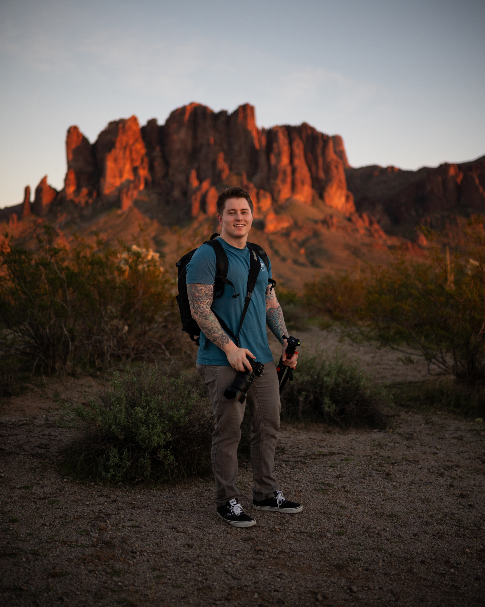
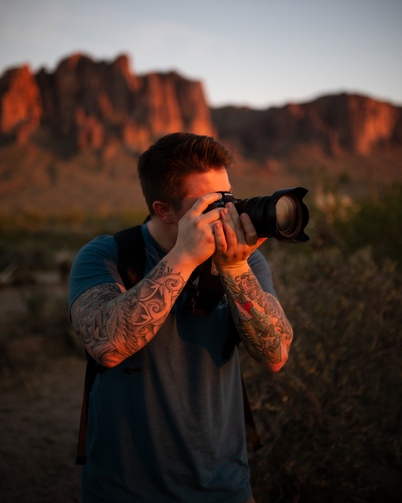

A brief history
Growing up with an appreciation for art, Devin was always trying to create something. It wasn’t until he joined the Navy as a Mass Communication Specialist (MC) in 2015 when he discovered his love of photography and graphic design.
As an MC, he was responsible for documenting what Sailors do through photography, videography, journalism and graphic design. As he rose through the ranks he developed expertise in not just content creation, but leading teams as well. His leadership led to numerous promotions and awards for many of his Sailors.
After leaving the Navy in 2022, he worked as the Lead Graphic Designer for Printbox Merch, a new printshop in Buda, Texas. There he built the business' branding from the ground up and led a team of designers through weekly production of more than 1500 custom orders. Eager to make more of an impact with his work, he accepted a Public Affairs Specialist role with Phoenix Veterans Affairs toward the end of 2024. This role allowed him to flourish as a problem solver and he brought a new sense of creativity to the vital storytelling needed for our local veterans.
With more than a decade of experience, Devin has maintained proven success in every job he's had and aims to be vital asset for any team he joins.
Skills developed through career
| Graphic Design | Photography | Leadership |
|---|---|---|
| Adobe CC | Mirrorless & DSLR cameras | Effective Communicator |
| Typography | Natural and Artifical Lighting | Creative Problem Solving |
| Layout and Composition | Professional Portraits | Adaptability |
| UX/UI Principles | Photojournalism | Conflict Management |
| HTML and CSS | Editorial | Time Management |
| Branding and Identity | Events | Relationship Building |
| Visual Storytelling | Post-processing | Emotional Intelligence |